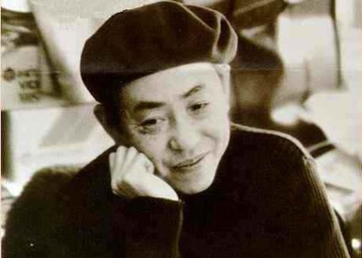

|
藤子·F·不二雄
|
|

|
|
作者生平
藤子·F·不二雄，男，日本著名漫画家。1933年12月1日出生于日本富山县的高冈市，本名藤本弘。毕业于富山县立高冈工艺高等学校电气科。曾经长期与另一位著名漫画家安孙子素雄（笔名藤子不二雄A）共用“藤子不二雄”的笔名。1947年受到漫画大师手冢治虫的启发，立志成为儿童漫画家。1964年凭《Q太郎》一炮走红，从此奠定了他在日本漫画界的重要地位，而他的代表作《哆啦A梦》更掀起了无法抵挡的旋风，成为了成千上万儿童心目中永恒的经典。 1993年，为了纪念藤本弘的成就，在日本的高冈市建成了“哆啦A梦散步道”。1996年9月23日凌晨2时10分因肝衰竭逝世，享年63岁。
|
|
人生评价
藤本弘先生是日本著名的科幻漫画家。他用自己无限的遐想,厚实的漫画功底，和自己三分之二的人生，为全世界少年儿童创造了一个又一个优秀的动漫作品，可爱的动漫人物。给少年儿童们带来无限美好，陪伴一代又一代人们度过了美好的童年。在中国少年儿童中享有极大声誉。
|
|
主要事迹
藤子不二雄原创作品有15套改编成TV系列的作品，总共被动画化的作品共有35套，数量之多可算是日本动画史中少见。
大事年表：
1933年12月 藤本弘在富山县高冈市出生
1949年 3月 看过迪士尼的《白雪公主》，可说是启发了藤子成为漫画家的原动力
1951年12月 与安孙子素雄一起向‘每日小学生新闻’投稿处女作《天使之玉》并被发表
1963年 6月 帮《小超人帕门》第34集《ミドロが沼》做原画工作
1964年 2月 《Q太郎》【《少年SUNDAY》】开始漫画连载
1965年 8月 《Q太郎》首播
1965年12月 电影《オハケのQ太郎 台风がくるの卷/ 忍术修行の卷》播映【东映】
1966年 4月 《レインボ--战队ロビソ》首播
1967年 1月 《神奇小子》【《少年SUNDAY》】开始漫画连载
1967年 4月 《神奇小子》首播
1969年11月 《モジヤ公》【ばくらマガジソ】开始漫画连载
1969年12月 《哆啦A梦》【《小学馆の学习杂志》】开始漫画连载
1999年《大雄的宇宙漂流记》上映
2000年《大雄的太阳王传说》上映
2001年《大雄与翼之勇者》上映
2002年《大雄与机器人王国》上映
2003年《大雄的神奇风之使者》上映
2004年 最后一部大山版大长篇动画《猫狗时空传》上映
2005年 大山版向水田版过渡，电影暂停制作
2006年《新大雄的恐龙》上映
2007年《大雄的新魔界大冒险》上映
2008年 水田版第一部原创剧场版《大雄与绿巨人传》上映
2009年 《大雄的新宇宙开拓史》上映
2010年 《大雄的人鱼大海战》上映
2011年《新·大雄与铁人兵团》上映
2011年9月3日 藤子·F·不二雄博物馆在日本川崎市开馆，将在哆啦A梦出生前的101年开馆，里面将展示部分哆啦A梦的道具
2012年3月3日《大雄与奇迹之岛~之动物历险记~》上映
2013年3月9日《大雄的秘密道具博物馆》上映
2014年3月9日《新·大雄的大魔境》上映
2014年8月8日《哆啦A梦3D版剧场版》上映
|